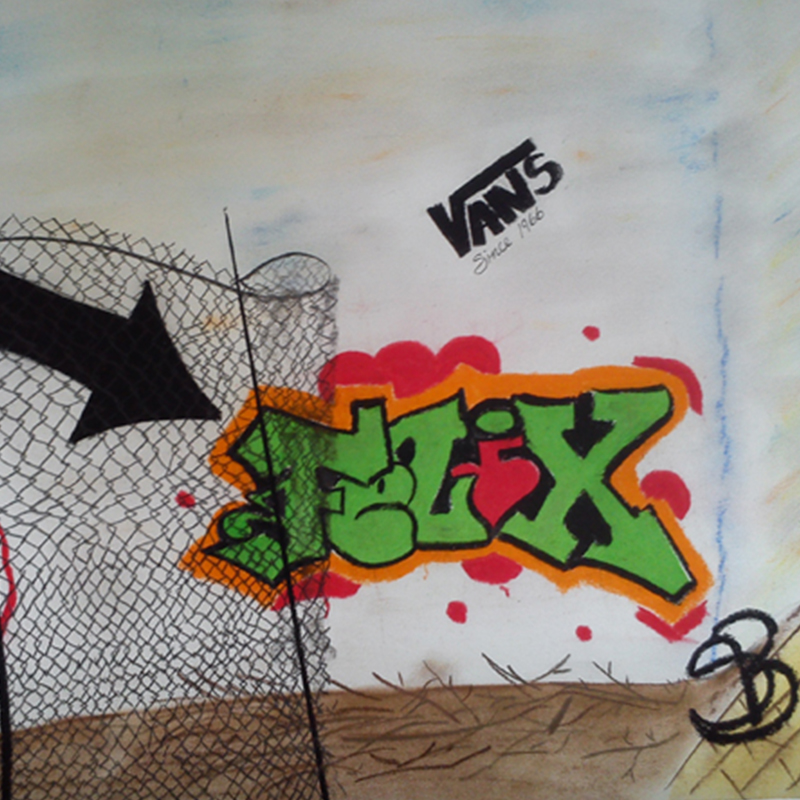

Ma famille ...


... Mon bonheur !
Maman de 3 merveilleux enfants de bientôt 9, 15 et 17 ans, également responsable d'un service de garde en milieu familiale depuis bientôt 7 ans. J’ai toujours eu une grande passion pour le dessin, la création ainsi la confection en tout genre. Étant une fille de défis, je me suis inscrite à cette formation afin d'élargir mes horizons et ajouter des cordes à mon arc mais également pour conserver mon équilibre mental ainsi mes neuronnes en bonne santé!
Ma famille ...
... Mon bonheur !
Ne sachant pas trop vers quoi me diriger à la fin de mon secondaire, j'ai opté pour une Technique en administration option finances. Choix guidé par ma famille, je suis restée dans les rangs... (Secrétaire, comptable ou autre travail de bureau). Après quelques mois à travailler dans ce domaine, je me suis rapidement aperçue qu'il manquait de couleur dans mon emploi seule avec mon écran, mon clavier et mes piles de chiffres. Je suis donc retourné sur les bancs d'école pour faire ce qui me passionne moi !!! C'est à ce moment que j'ai fait mon D.E.P. en dessin de patrons. J'ai travaillé dans ce domaine environ 7 ans, jusqu'à ce que l'importation prenne le dessus sur la production local et que nos usines de confections ferment leurs portes les unes après les autres. Étant en région je me suis rapidement retrouvé à faire que le contrôle de qualité du "MADE IN BANGDLADESH". L'horreur!!!